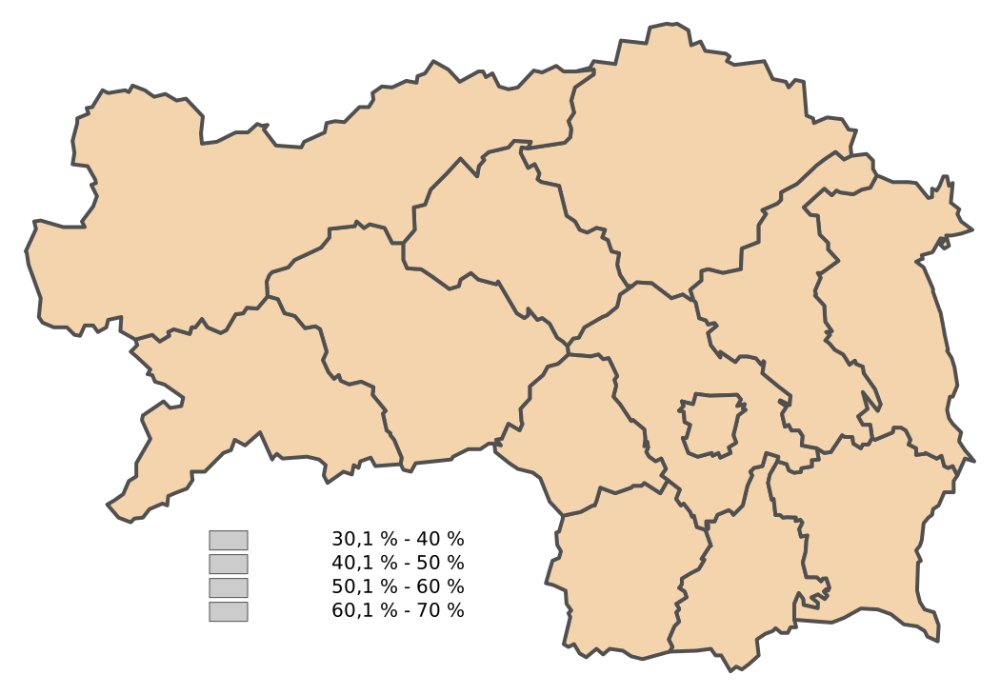

bpw16-vis
Aufgehobene Stichwahl Gesamt
Aufgehobene Stichwahl Nur Wahllokal
Aufgehobene Stichwahl Nur Briefwahl
Wiederholte Stichwahl Gesamt
Wiederholte Stichwahl Nur Wahllokal
Wiederholte Stichwahl Nur Briefwahl
Aufgehobene Stichwahl
Gesamt

Nur Wahllokal
Nur Briefwahl
Wiederholte Stichwahl
Gesamt
Nur Wahllokal
Nur Briefwahl